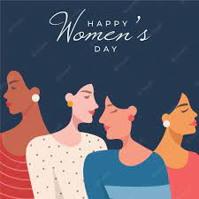

Mỗi người sinh ra đều phù hợp với một người nào đó, thật may mắn vì anh đã tìm được hơn 4 nửa kia của đời mình rồi. Với anh, hạnh phúc lớn nhất là có 4 em. Hãy luôn ở bên anh nhé, yêu nhiều em.

Nhân ngày 20/10, chúc bạn nhận được nhiều lời khen, nhiều hoa, nhiều quà. Chúc bạn luôn ngập tràn niềm vui và hạnh phúc mỗi ngày nhé!
Hôm nay là ngày Phụ nữ Việt Nam 20/10, mình chúc bạn luôn trẻ trung, tiền nhiều như kẹo, tình bền chặt như keo, dẻo dai như mèo và mịn màng trắng trẻo.
Nhân ngày 20/10, chúc một nửa thế giới luôn xinh đẹp, thành công và có nhiều chàng trai theo đuổi.
Nhân ngày Phụ nữ Việt Nam 20/10, có đôi lời chúc ngắn gọn cho chị em: chúc chị em luôn vui vẻ như chim sẻ, khỏe mạnh như chim đại bàng, giàu sang như phượng hoàng, làm lụng như chim sâu, sống lâu như đà điểu.
Nhân ngày 20/10, xin chúc một nửa thế giới của chúng ta luôn thành công và hạnh phúc!
20/10 chúc chị em tay ôm nhiều hoa, giỏ đựng nhiều quà, được đi chơi xa, ăn uống thả ga, tiền không phải trả. Chúc chị em gặp nhiều may mắn và hạnh phúc mỗi ngày.
Nhân ngày 20/10 chúc một nửa thế giới luôn xinh đẹp, duyên dáng và thành công trong cuộc sống!
Nhân ngày 20/10, xin kính chúc một nửa thế giới luôn thành công trong cuộc sống! Chúc chị em luôn duyên dáng và xinh đẹp trong mắt một nửa thế giới còn lại!
Ai sinh ra cũng đều là sự sắp đặt của tạo hóa, vì thế mỗi người phụ nữ vốn dĩ đã là bông hoa của xã hội. Chúc các chị em nhận được nhiều điều bất ngờ trong dịp 20/10 đặc biệt này này.
Trong ngày 20/10 hôm nay, hãy để đàn ông là người yêu thương và che chở, còn các chị em hãy cứ yêu thương bản thân, yêu đời và luôn rạng rỡ nhất.